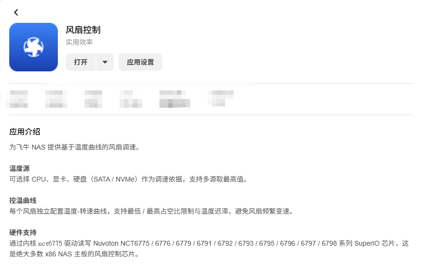
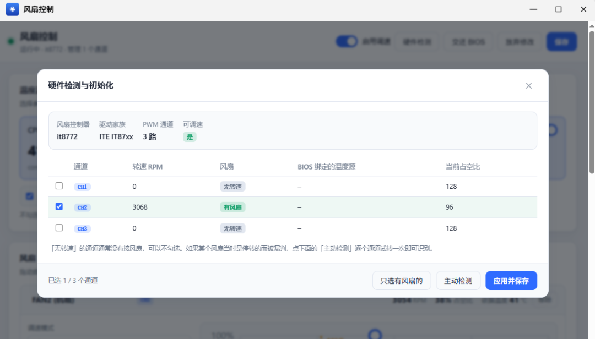
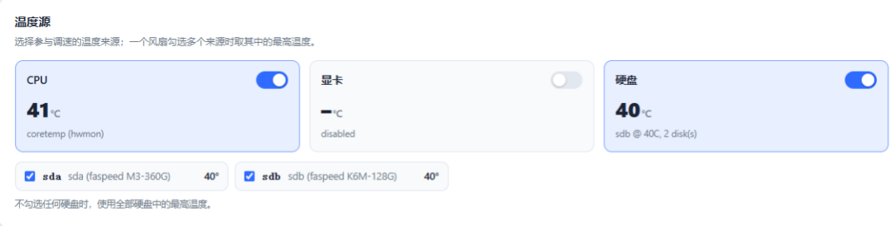
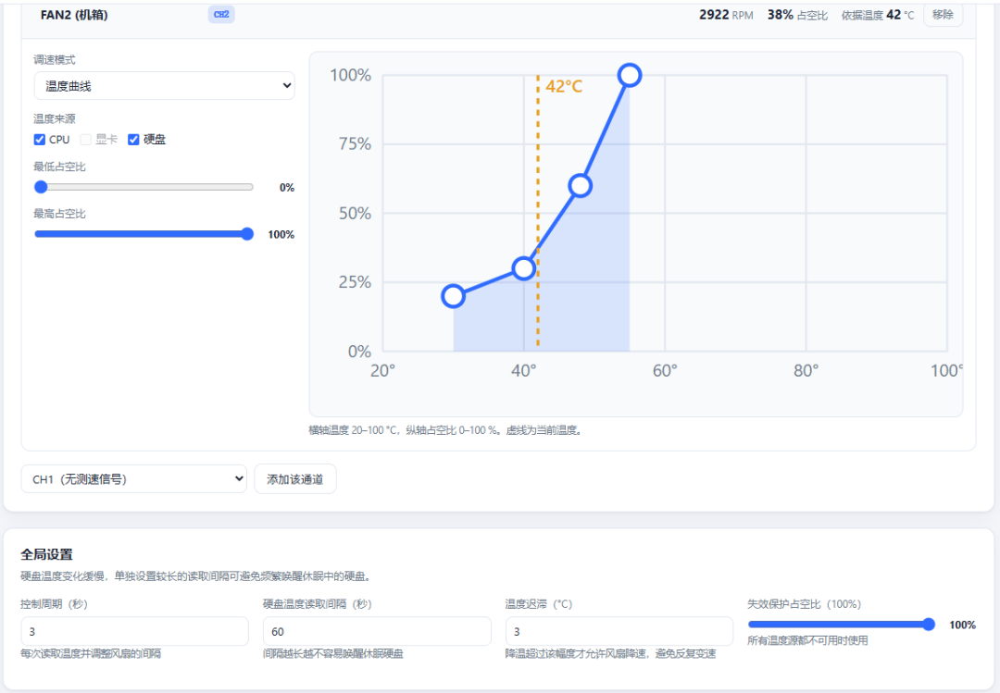

飞牛fnOS 新上的 风扇控制 把这件事交回你手里：拿 CPU、显卡或硬盘的温度当依据，按你画的曲线自动调速，低负载安静、高负载压得住。

它是一款系统工具类应用，通过 Linux 内核的 nct6775 驱动，读写主板上的 Nuvoton NCT6775~6798 系列 SuperIO 芯片——这类芯片是绝大多数 x86 NAS 主板用来控制风扇的芯片。应用读取温度，再按你配的曲线向风扇下发转速。
它解决的具体问题：主板 BIOS 的风扇策略又慢又死板——低负载时风扇还在空转（吵），高负载时又反应迟钝。风扇控制把它从「硬件行为」变成「可配置的策略」：温度 → 曲线 → 转速。
数据与配置都保存在本机、不上云。但要先说清楚：它只支持 x86，且主板要使用上面那类芯片；ARM 设备或风扇被 BIOS 锁死的品牌整机，它接管不了。

01 温度源随便挑
可拿 CPU、显卡或硬盘（SATA / NVMe）的温度作依据，还支持「多源取最高值」——让一个风扇盯住几块盘里最热的那块。
02 每个风扇一条曲线
每个风扇独立配置「温度 → 转速」曲线，而不是所有风扇一刀切，拖动曲线即可调节功能。
03 有迟滞，不抖不闹
支持最低 / 最高占空比限制与温度迟滞，防止风扇在临界温度点反复加、减速，频繁变速。
04 留底，不让风扇停
每个风扇可设最低占空比，防止转速被压到 0 导致停转、硬盘过热。
05 双重安全兜底
温度源全部失效时风扇自动升到全速保护硬件；停止或卸载应用时，所有风扇自动交还主板 BIOS 控制，不留失控风扇。
06 为飞牛而做
以飞牛应用形式上架应用中心，装完即是网页界面，不用自己写脚本、配 systemd 服务。
1 登录飞牛 NAS 网页端，打开桌面的应用中心。
2 搜索 风扇控制，确认是系统工具类、架构为 x86，点击安装。
3 安装完成后打开应用，进入风扇调速界面。
4 若打开后扫描不到风扇，先别卸载——多半是传感器 / 驱动没就绪。
识别不到风扇？先查这两件事
· 飞牛应用中心有传感器驱动类应用（如 ite-it87 这一类芯片驱动），先装了再回来重新扫描。
· 确认主板是否属于 NCT6775~6798 系列、内核 nct6775 模块是否已加载。
· 驱动装好仍加不上风扇，通常是主板 / BIOS 不支持 PWM 调速或 PWM 线没接对——软件无法解决。


一条常见的曲线思路
30℃ 以下 约 20%~30%（安静为主）
40℃ 约 40%
50℃ 约 60%
60℃ 以上 100%（降温优先）
先按「安静优先」起步，观察几天温度再逐步收紧，别一上来就把转速压到极低。
· 自己组装（DIY）的 x86 飞牛 NAS 用户，尤其是用主流台式机主板的那批人
· 被风扇常年嗡嗡转、想安静下来的家庭用户
· 硬盘仓温度偏高、想按硬盘温度而不是 CPU 温度控风的用户
· 愿意花几分钟调一条曲线、之后就不用管的人
① 仅 x86，且看主板芯片。它靠 Nuvoton NCT6775~6798 系列 SuperIO 芯片读写风扇；ARM、非该系列芯片、风扇被 BIOS 锁死的机器都用不了。
② 停转风险要自己防。最低占空比设到 0，风扇可能在低温时停转，温度反而失控。给每个风扇留一个「永不停止」的最低转速。
③ 曲线别画太激进。为了安静把整条曲线压太低，高温时可能压不住温度。高温段（60℃ 以上）建议给到 100%。
④ 卸载后会交还 BIOS。停用 / 卸载应用时风扇自动交还主板 BIOS 控制，这是保护机制不是故障，但也意味着卸载后策略回到 BIOS 原样。
⑤ 换曲线后盯一两天。涉及硬件调速，改完最好观察温度与噪音，确认没有异常再放着不管；机械硬盘仓宁可吵一点，别让硬盘长期高温。
一句话总结：把「风扇怎么转」从 BIOS 的固定套路，变成一条你自己画的温度曲线——该静的时候静，该压的时候压。